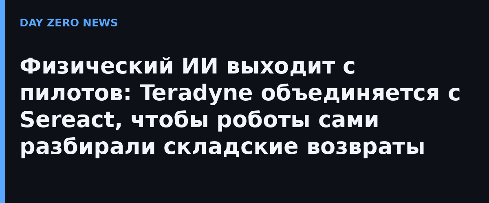

21 октября 2026 года на NVIDIA GTC Berlin Teradyne Robotics и мюнхенская Sereact объявили об официальном партнёрстве: платформа Cortex, Vision-Language-Action модель Sereact, напрямую управляет манипуляторами Universal Robots. Задача — автоматизировать «неудобные» несструктурированные операции: обработку возвратов, пикинг штучных товаров, комплектацию, упаковку, загрузку станков. Ключевой фокус — одна производственная модель, «один мозг» на все задачи: робот не переобучается под каждый новый предмет или операцию, а навыки, полученные одной машиной, доступны всем остальным.
Компании подчёркивают: речь не про пилоты. Сотни роботов UR в двухруких ячейках уже стоят на действующих предприятиях Европы. Самый наглядный кейс — центры обработки возвратов модного ритейлера Zalando в Германии и Польше, где роботы с Cortex автономно разбирают возвращённую одежду и обувь: смешанные товары, незнакомые позиции, разная упаковка. Teradyne говорит о более чем 100 000 промышленных внедрений своих роботов как о фундаменте, на который нарастает физический ИИ.
Летом Sereact открыла американскую штаб-квартиру в Чарлстауне (Бостон, Массачусетс), чтобы вместе с Teradyne выводить связку на рынок США. Показательна и экосистемная часть анонса: в тот же день Sereact объявила о партнёрстве с облаком Nebius для ускорения «петли обучения» корпоративных роботов на инфраструктуре NVIDIA, а совместный проект с CEVA и Zalando замкнул цикл переобучения на реальных возвратах.
Рынок складских роботов годами упирался в одну стену: хватательные задачи с незнакомыми объектами требовали дорогой ручной настройки под каждый артикул. Связка Vision-Language-Action модели с массовым парком коллаборативных манипуляторов — это попытка превратить робототехнику из инженерного проекта в продукт с «мозгом по подписке». Для ритейла и логистики, где обработка возвратов — одна из самых дорогих статей, ставка на самообучающуюся общую модель выглядит практичнее, чем армия специализированных ячеек.